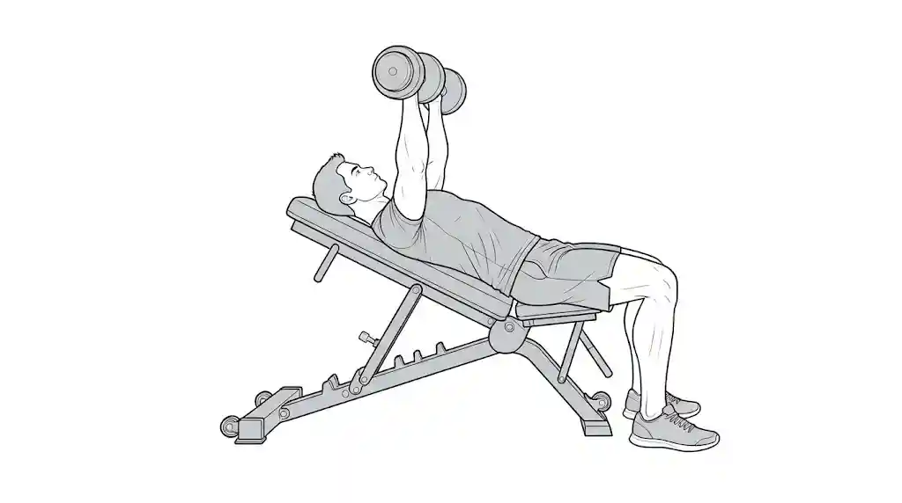
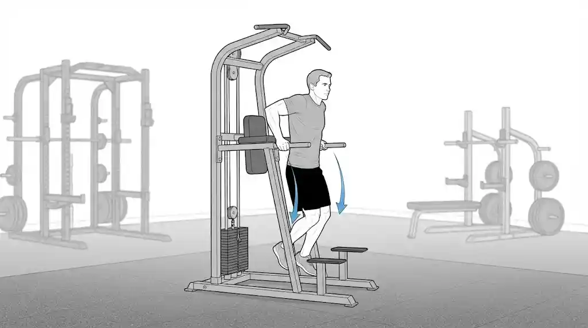

4 séries
12 répétitions
30 sec entre chaque répétition
2 min entre chaque série



La séance Push (poussée) cible l'ensemble des muscles responsables des mouvements d'éloignement de charge : les pectoraux, les épaules (deltoïdes) et les triceps. En regroupant ces groupes musculaires qui travaillent naturellement en synergie, cet entraînement maximise l'intensité tout en optimisant le temps de récupération entre vos séances.

4 séries
12 répétitions
30 sec entre chaque répétition
2 min entre chaque série
